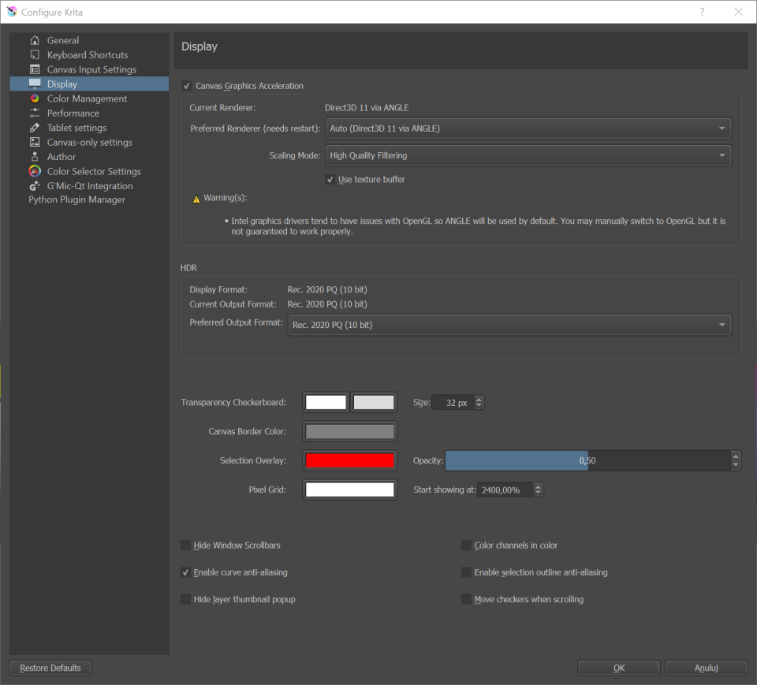

「顯示」設定¶
這裡可以編輯 Krita 顯示方面相關的設定。
OpenGL（Open Graphics Library 開放式圖形庫）¶
Kruta 3.3 之後的版本：改稱為「 畫布圖形加速」
OpenGL 是一些使用於顯示卡的語言，顯示卡則是專門幫助電腦進行圖形運算的硬體，Krita 也依靠它進行圖形運算。現代的電腦上面通常會有一張顯卡，或是通過內建顯示晶片的 CPU 來提供圖形運算能力。
Krita 3.3 與之後的版本：在 Windows 作業系統下 Krita 還支援了 ANGLE 程式庫，依靠它的幫助以使用 Direct3D ，ANGLE 的工作原理是將 Krita 使用的 OpenGL 函數轉換為 Direct3D 中的相等功能，可能會（也可能不會）比原生 OpenGL 慢，但它與典型的 Windows 顯示驅動程式具有更好的相容性。
- 啟用 OpenGL （Krita 3.3 與之後的版本：改稱「畫布圖形加速」）
勾選這個項目後會啟用 OpenGL/ANGLE 「畫布圖形加速」模式。若顯示卡性能夠好，應該可以更快速反應筆刷和工具的操作，此外對於旋轉、縮放的動作也會更快、更細與膩滑順不會有停滯感。
- Krita 3.3 與之後的版本：
- 繪製
在 Windows 作業系統上：您可以在 OpenGL 或 ANGLE、 Direct3D 11 繪製器之間切換。 通常建議將其保留為「自動」，因為 Krita 會根據一些內部相容性檢查來決定最佳使用模式。 此選項若經更改，需重啟 Krita 才能生效。
- 啟用紋理緩衝區
勾選此項目可利用顯示卡的緩衝區來加快顯示速度。雖然目前此功能在某些 AMD/Radeon 顯示卡上可能會造成一些問題，在某些 Intel 顯卡上則可能工作良好，因此請實際測試後再選用。
- 檢視縮放演算法
使用者可以選擇在檢視縮放畫布時使用哪種縮放演算法。這裡的選擇僅影響畫布操作時影像顯示之畫質，與 Krita 實際調整影像大小、變形工具之類處理後的影像品質沒有關係。
- 最近相鄰
這是最快速又粗糙的過濾演算法，直接使用像素相鄰原圖的顏色。雖然速度很快，但這會導致放大後產生的鋸齒、色塊和摩爾紋，以及縮小影像時發生混色和閃爍。
- 雙線性過濾
這個運算結果會比「最近相鄰」演算法的畫質好一點，可以消除放大後的色塊，整體也更加平滑。 在大多數情況下，這種演算法可在速度與畫質之間取得均衡。
- 三線性過濾
這個運算的畫質比「雙線性」演算法更好。
- 高品質過濾
這個選項只有在您的顯示卡支援 OpenGL 3.0 或更高的版本時才可用。顧名思義，這個選項啟用後可在畫布操作時提供最好的畫質。
HDR 設定¶
在 4.2 版本新加入: 這些設定僅在 Windows 作業系統下才可用。
從 Krita 4.2 版起，這套軟體不但可以製作浮點通道的影像，還能在支援 HDR 的軟硬體環境下按照 HDR 標準顯示影像。
HDR 選項會列出 Krita 可用的格式，以及當前輸出格式，請將這選項設定至最接近您所使用的顯示器之格式以充分利用。
- 顯示格式
預設情況下這裡顯示器的格式若只有 8bit，那麼 Krita 會判斷您使用的很有可能不是 HDR 顯示器。這或許是硬體問題，例如顯示器使用的連接線是否支援 HDR ？但也可能是顯示驅動程式沒有正確安裝或過於老舊？同時請檢查其他 HDR 應用程式或系統 HDR 設定是否正確且能正常工作。
- 目前輸出格式
Krita 當前用於畫布檢視繪製的格式。
- 首選輸出格式
您希望使用於畫布顯示的格式。理想情況下是將這設為與您使用的顯示器規格最接近之格式 ，但可能因為驅動程式的問題讓您必須嘗試使用其它格式。變更這項目後需要重新啟動 Krita 才會生效。
透明棋盤格色彩¶
Krita 所有圖層都支援透明度，因為透明度是無法看到的，所以 Krita 預設以灰、白兩色的棋盤格圖案來代表透明區域。 你可在這些選項中更改棋盤格圖案的相關設定。
- 大小
這個設定可變更影像透明部分棋盤格的大小。
- 色彩
使用者可在這個項目設定棋盤格的顏色。
- 捲動時移動棋盤格背景
勾選這個選項後，棋盤格會在畫布平移、縮放時與影像不透明元素一起移動；反之不勾選的話，棋盤格會保持固定，只有影像與不透明部分會移動。
畫布外周色彩¶
- 色彩
這裡可以指定畫布範圍外背景的顏色。預設是灰色。
- 隱藏捲動軸
鉤選此項目時將在所有檢視模式下隱藏捲動軸。
像素格線¶
在 4.0 版本新加入.
這個選項可設定以自動顯示像素格線，此功能對於像素藝術的繪圖非常有幫助。
- 色彩
格線的顏色。
- 開始顯示比例
指定像素格線開始顯示出來時的放大比率，因為當影像縮小很多時顯示這個只會讓格線覆蓋在影像，若設定太小只會適得其反。
其他¶
- 顏色中的色彩通道
This configures whether the image display should be colored when only a single channel is selected in the channels docker.
- 啟用曲線反鋸齒
這功能啟用時可在預覽曲線上消除鋸齒，例如圓形工具或路徑工具的曲線會變更平滑。
- 啟用選取區域輪廓反鋸齒
這功能啟用時可在選取範圍自動反鋸齒，使選取區域更精確並且降低邊緣鋸齒。
- 隱藏畫布捲動軸。
隱藏畫布邊捲動條。
- 隱藏圖層浮動縮圖
這功能可停用滑鼠游標停在圖層上顯示的縮圖。